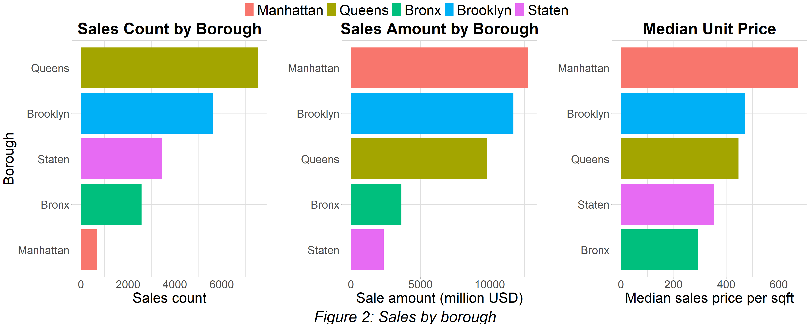
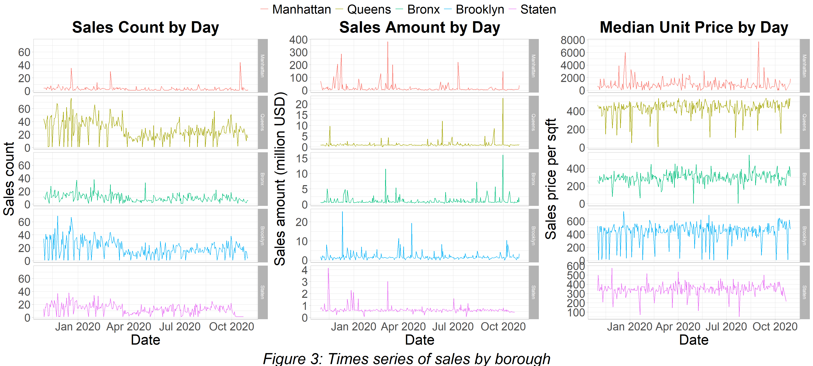
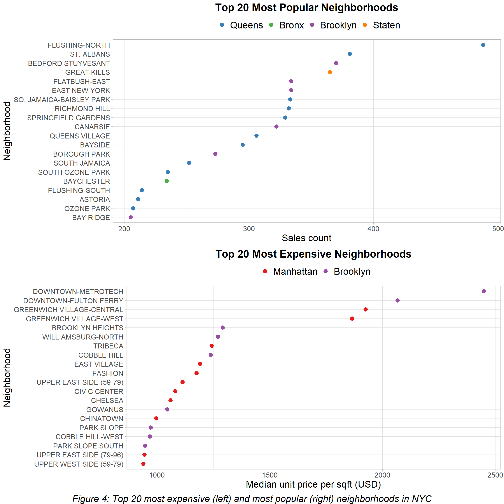
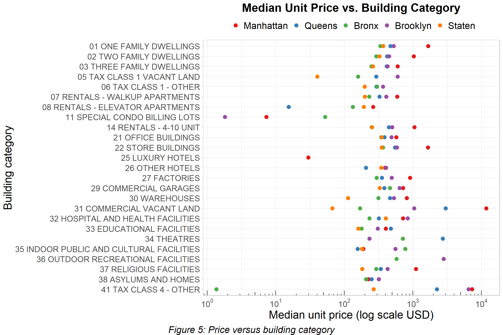
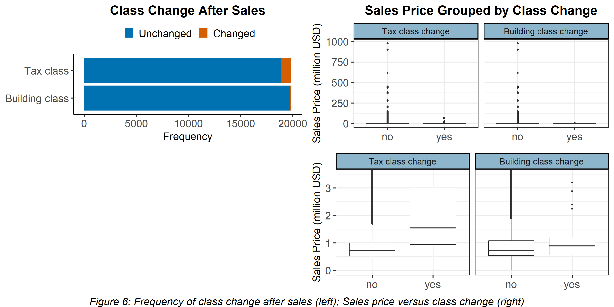
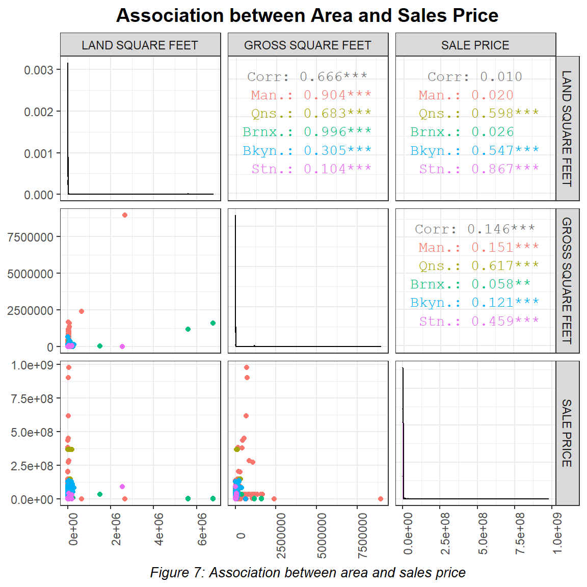
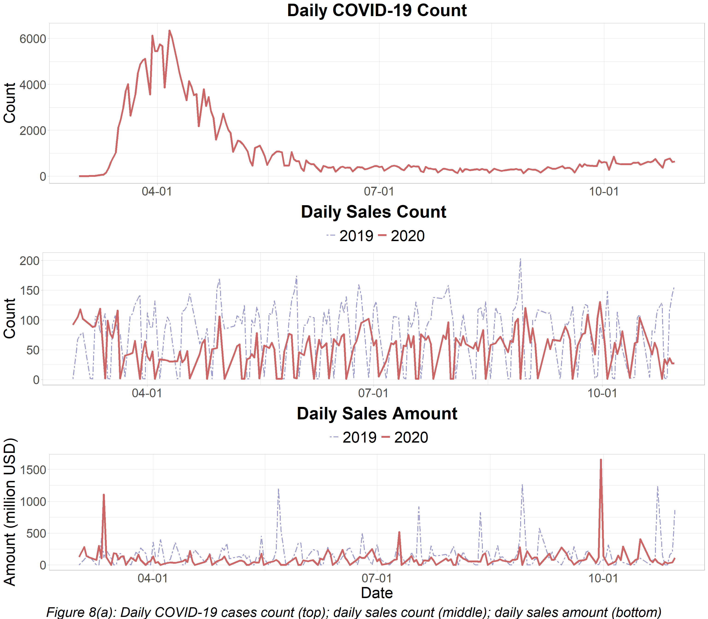
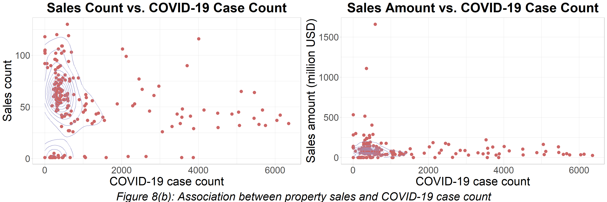
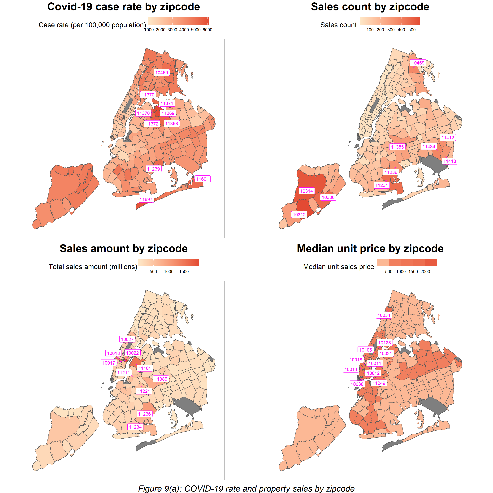
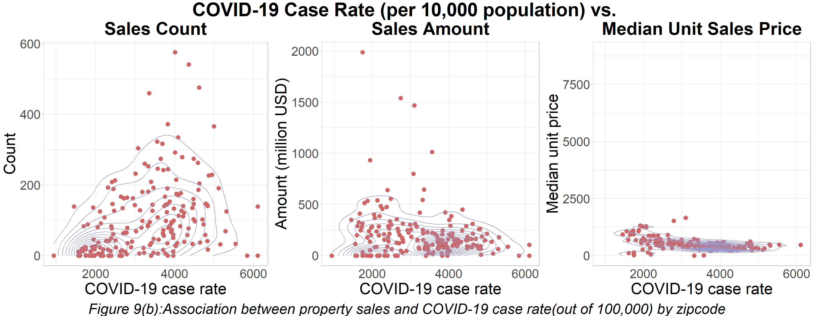

Chapter 5 Results
Section 5.1. Property sales evolution and distribution in NYC
We first take a look at the property sales by borough. In the upper left plot in figure 2, we observe that Queens and Brooklyn have the highest property sales in the past 12 months, while Manhattan is the borough with significantly lower property sales. However, in terms of total sales amount (accumulated sale prices in each borough), Manhattan reaches the highest amount of total sales with the least sales count. Although Queens has a higher sales count than Brooklyn, it has less total sales amount (upper right in figure 2). While we inspect the unit price, which is the price per square foot of each property, Manhattan has the highest median unit price in all five boroughs, and Brooklyn has a higher median unit price than Queens. This observation is consistent with our inspection of the upper two plots. Also, we noticed that the Bronx has the lowest median unit price among all five boroughs.

Next, we inspect the time series for the sale amount, total sale, and median unit sale price in the past year for each borough separately. From the daily sales amount, we observe that the Bronx, Brooklyn, Queens, and Staten Island share a similar trend, while Brooklyn and Queens are almost identical in their magnitudes of each day’s sales. For Manhattan, the general sales amount is low, but there are three peaks, one in January, one in March, and one in November. Moving forward to the time series of daily sales amount, we observe that the sales amount per day is consistent with several peaks for all boroughs. For the median unit price per day, we notice that Manhattan has higher statistics than other boroughs, which matches with the intuition.

Then, we use a Cleveland dot plot to visualize the top 20 most popular neighborhoods in terms of sales count and the top 20 most expensive neighborhoods in terms of the median unit price. From the first plot, we observe the neighborhoods from Queens and Brooklyn dominate the top 20 most popular ones, with two exceptions of Great Kills from Staten Island at 4th place and Baychester from the Bronx at 16th place. In the ranking of the most expensive neighborhoods, neighborhoods from Manhattan and Brooklyn share all top 20.

In this part, we look deeper into the statistics and categorize the median unit price by the building categories of the properties. Note that here we use log scale here to generate a clearer exhibition of the price difference in the middle price range. An interesting observation is that for the family dwellings, one is the most expensive, two is less, and three is the least expensive. This trend holds for all boroughs in NYC. Furthermore, while family dwellings in Queens, the Bronx, Brooklyn, and Staten are similar in price, the same type of property in Manhattan is much higher than the other neighborhoods. We also noticed that they all are in the same descending order in terms of median unit price: Manhattan, Brooklyn, Queens, Staten, and the Bronx at last.

When we look at the percentage of properties that have the tax or building class changed after-sales, we observe from the left plot that around 10% of properties experienced tax class change after-sales and few of them experienced building class change.
Then we draw a box plot of the sales price distribution and grouped it by whether or not the properties experienced class change to see if the sales price of the properties in one group is different from those in the other.
The first plot on the right is the original box plot. We notice that the group with tax class change does not have as many outliers as the group without tax class change. And among its outliers, no one has an extremely high sales price. The observation may be resulted from the difference between sample size, or from other reasons that are not clear yet. Due to the long tail consisting of outliers, we can barely see the inter-quartile range. Therefore, we zoom in the original plot in the second box plot, and find that compared to properties without tax class change, those with tax class change usually have higher sales prices.

Then we try to figure out how the rest continuous variables, such as the number of units, the area, and the history of a property, impact the sales price, so we use a scatter plot matrix colored by borough to find the correlations. The result shows that both the number of units and the history of a property have no correlation with the sales price, so we omit them from figure 7.
On the other hand, the sales price shows a correlation with the square feet, but only in several boroughs. In Queens and Staten, both the gross square feet and the land square feet are positively correlated to the sales price. In Brooklyn, only the land square feet is positively correlated to the sales price.
The observation is actually pretty counter-intuitive since we generally believe that sales price should be proportional to the square feet. The reason behind the low correlation values between the sales price and the square feet for other boroughs might be the vast difference in unit price between neighborhoods in the same borough. Recall that when we research the top 20 most expensive neighborhoods, there is a huge difference in unit price between those neighborhoods, and most of them are from Manhattan or Brooklyn. On the other hand, while the Bronx does not have expensive neighborhoods, it has the lowest median unit price among all boroughs and the cheapest family dwellings. Therefore, most properties’ sales price in the area may be generally low regardless of the square feet.

Section 5.2. COVID-19 and property sales in NYC
We observe that both the sales count and the sales amount of 2020 are in general lower compared to those of the year 2019, although both of them start off higher in 2020 when the COVID-19 barely began to spread in NYC (shown in figure 8(a)). As COVID-19 cases surge from the middle of March, we observe an evident decrease in both sales count and sales amount. Although later trends are not as obvious as the sudden drop in mid-March, the sales count display an opposite trend compared to the trend of the COVID-19 cases. Such an association is also observed with the sales amount but even less obvious.


From figure 8(b), we observe that most days have fewer than 1,000 COVID-19 cases. To be more specific, 147 out of the 203 days in the record have lower or equal to 1,000 COVID-19 cases. Most days with relatively fewer COVID-19 cases (below 1,000) have between 50 to 100 cases of property sales. The sales count dots for days with relatively fewer COVID-19 cases are more widely spread on the sales count axis. Also, we observe a weak negative association between the daily COVID-19 case count and daily sales count as the days with more cases tend to have lower property transaction counts.
In terms of sales amount, it is quite stable across days with different COVID-19 case counts. However, we notice that several days with relatively fewer COVID-19 cases have extremely high total sales amount, which does not happen during days with much more cases.
A Pearson correlation test suggests a statistically significant negative correlation(-0.15) between COVID-19 case count and property sales count (p-value of 0.03<0.05). However, the correlation between the COVID-19 case count and the sales amount is not statistically significant, according to the Pearson correlation test. Such findings corroborate our observations in the times series plot.
Figure 9(a) shows the COVID-19 case rate per 100,000 people and the property sales by record where the top 10 zip codes are highlighted. The zip codes with the top 10 highest sales counts are located in Queens, Brooklyn, the Bronx, and Staten Island. And in general, these zip codes are on the side of their boroughs that are further from Manhattan. Indeed, we can observe a pattern that the zip codes further from Manhattan generally have higher sales count.
The zip codes with a high median unit sales price are mostly located in Manhattan, with the exception of 11249 in Brooklyn and 10034 in the Bronx. The zip code with the highest median unit sales price is 10105 in Manhattan; its median unit price is 8915.551 USD per square foot, while all other zip codes have a median unit price below 2,000 USD per square foot. In fact, there is only one transaction of the commercial vacant land in 10105, which has an extremely high unit price. On the other hand, the fact that 10034 in the Bronx being the third most expensive zip code is quite surprising, considering our previous findings. A closer examination of the zip code shows that there are only four property transactions in 10034, and two of them (the transactions of a commercial garage and a religious facility) have very high unit prices and thus drive up the median unit price. As for sales amount, zip codes with a high sales amount can be divided into two groups. The first group is mostly price-driven, such as 10017 and 10018 in Manhattan. Typically, properties in these zip codes tend to have high unit prices but low sales count. The second group is quantity driven, such as 11234 and 11236 in Queens; these zip codes have lower unit prices but fairly large sales count.


Figure 9(b) presents a clearer display of the association between COVID-19 case rate and property sales by zip code. According to Figure 9(b), most zip codes have COVID-19 case rates between 2,000 to 6,000 (out of 100,000). Also, we observe a positive association between the COVID-19 case rate and the property sales count in the scatter plot of Figure 9(b). According to the Pearson correlation test, the COVID-19 case rate of a zip code is positively associated with the sales count within that zip code; the correlation between the two is 0.5021585. Such association is statistically significant (p-value < 2.2e-16). On the other hand, the Pearson correlation test suggests a statistically significant mild negative association (correlation -0.43 and p-value 8.392e-10) between COVID-19 case rate and median unit price; such a negative association can also be observed from the scatter plot. The correlation between COVID-19 case rate and sales amount is not statistically significant.
In a word, zip codes with higher COVID-19 case rates tend to have higher sales count but lower median unit sales price. Such a pattern, related to the real-world situation, might indicate an area with weaker economic performance. However, it is too early to draw any conclusion like that during the phase of exploratory analysis, and further study is required.